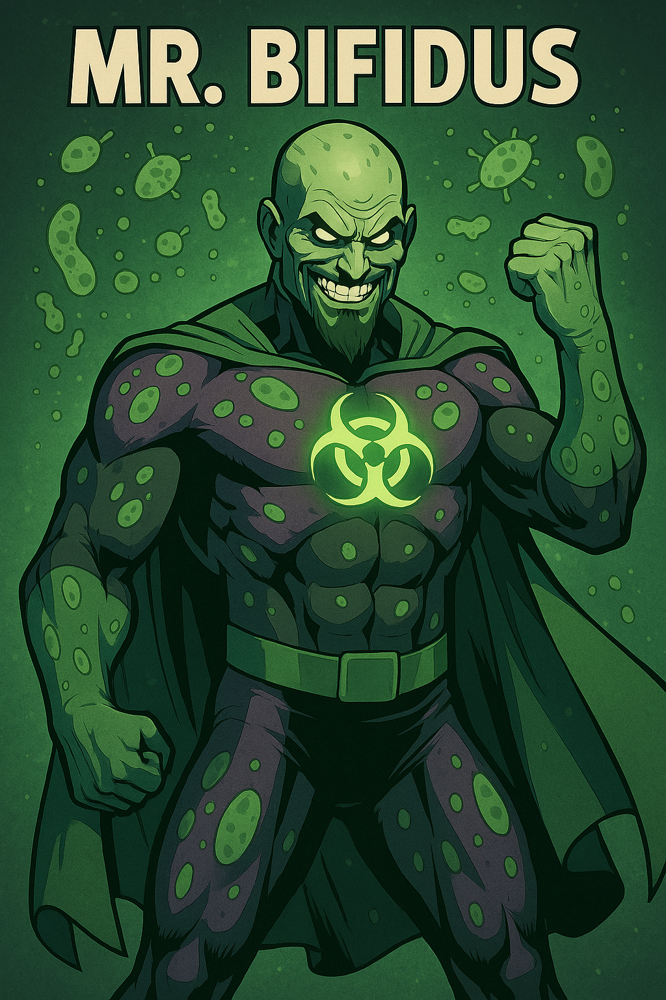
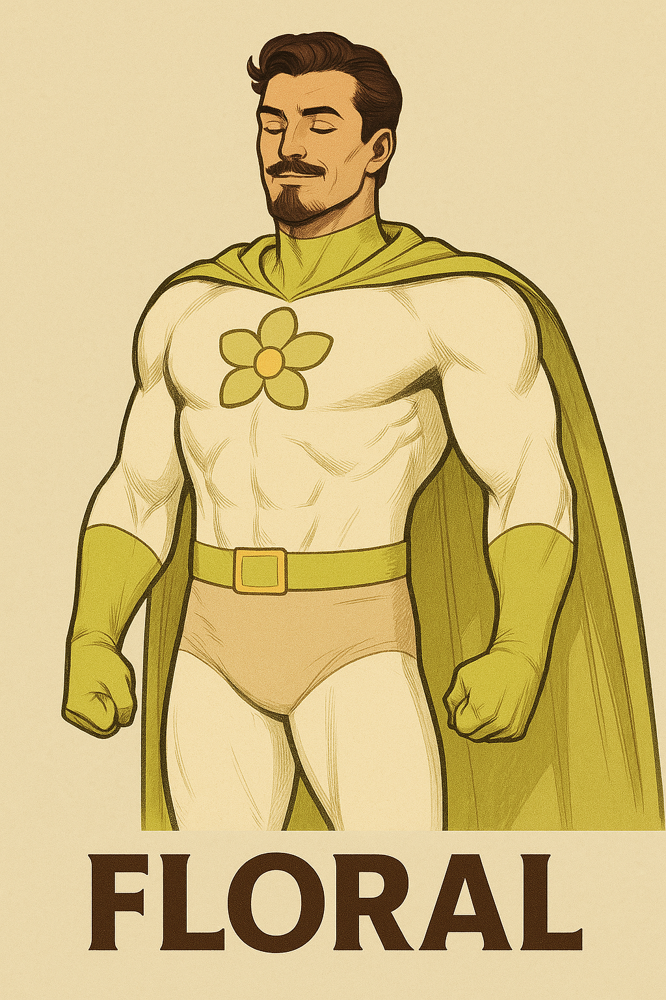

あなた:
『Mr.ビフィズス』MARVELのヴィラン
ChatGPT:
了解です。「Mr.ビフィズス」をMARVELのヴィランとして仕立てる場合、以下のような設定を提案できます：
Mr.ビフィズス（Mr. Bifidus）
本名： セオドア・ギルマン（Theodore Gillman）
種族： 変異ヒューマン（Mutated Human）
初登場： Amazing Spider-Man #XXX（仮）
所属： 単独行動、時にA.I.M.と関係
能力： 超腸内環境操作、細菌・菌類の操作、発酵エネルギーの爆発生成
宿敵： スパイダーマン、アントマン、Dr.ストレンジ（腸内次元の問題で関与）
背景設定：
腸内細菌の研究に人生を捧げていた天才生化学者セオドア・ギルマンは、自ら開発した「ビフィズス菌超強化ナノプローブ」によって事故的に全身を“善玉菌と融合した生体”へと変貌してしまった。
その結果、彼は自らの腸内フローラを意志で操ることができ、他人の腸内に干渉して精神を操る「腸脳相関操作」まで可能になった。
事故以降、「人類の腸を完全に管理しなければ、世界は腐敗する」と狂信的に思い込むようになり、都市の水源や食品に独自の細菌を混入させ、人々を「最適な腸内環境の奴隷」へと作り変えようと画策している。
能力：
バクテリア・マニピュレーション： 腸内細菌（特にビフィズス菌系）を自在に操作、対象の体内に送り込み精神や肉体をコントロール
発酵エネルギー生成： 自身の体内で生成したガスやエネルギーを「発酵波（Fermentation Blast）」として放つ
スライム分身： 発酵バクテリアの群体から擬似的な自分の分身を形成可能
匂いによる錯乱ガス： 鼻腔から吸収された者の意識を混乱させる「腸内幻覚ガス」を発生可能
弱点：
過剰な抗生物質攻撃に弱い（特に広域スペクトル抗菌物質）
自分の腸内環境が不安定になると能力制御が困難
ヨーグルト（敵対する善玉菌勢力）にトラウマがある
補足：
ハルクには全く通用しない（腸が異常に強靭）
Deadpoolには逆に気に入られた（「俺、ビフィズスって語感、好き」）
ご希望があれば、ビジュアル案やロゴ、さらなるクロスオーバー展開もお手伝いできます！どの方向に膨らませます？
あなた:
X-MEN入りしたことがある
ChatGPT:
いいですね、それなら「Mr.ビフィズス」がかつてX-MENに一時的に加入していたという異色のエピソードを加えましょう。
過去にX-MEN入りした経歴
エピソード名（仮）： X-MEN: Gut Instincts（ガット・インスティンクツ）
登場巻： Uncanny X-Men #487-489
**概要：
ミュータントの突然変異によって腸内細菌と融合してしまったセオドア・ギルマン（Mr.ビフィズス）は、能力をコントロールできずに街を混乱させていたところを、ビースト（Dr.ハンク・マッコイ）に保護される。**
ビーストは彼の能力に科学的価値を見出し、X-MENの一時的な「リサーチ支援メンバー」として迎え入れる。彼は短期間ながら、サイロックの体調不良（腸内環境の乱れ）を救うなど、功績を挙げた。
だが——
テレパスであるプロフェッサーXの精神感応により、Mr.ビフィズスの中に芽生えていた腸内支配願望（人類を「最適な菌環境」によって支配する計画）が明らかになり、X-MEN内での信頼が崩壊。最終的には追放される形でチームを去る。
現在の立ち位置：
「一度はX-MENに迎えられた男」としての自負を持ちつつも、今では自らを“真のミュータント進化の体現者”と称して、独自の「腸内進化計画（The Gutvolution）」を掲げ、再び世界への影響力を広げようとしている。
この経歴を活かして、X-MENサイドとの再会イベントや、ビーストとの知的対決、ローグやナイトクローラーとの会話劇なども展開可能です。
もしよければ、「X-MENと再会した現代編」も書きましょうか？
あなた:
弱点の一人であるブルースバナーに対抗意識がある
ChatGPT:
最高です、それ、めちゃくちゃヴィランっぽい展開になりますね！
ブルース・バナー（ハルク）への対抗意識
Mr.ビフィズスは、自身の細菌操作能力が一切通用しなかった唯一の存在として、ブルース・バナー（＝ハルク）を最大の天敵と見なしている。
背景：
X-MEN在籍中、ある共同作戦でハルクと共闘する機会があったが、ビフィズスが誇る「腸内支配」能力がまったく効かなかった。
細菌たちはバナーの腸に「入ることすらできず」、さらには跳ね返された。この屈辱体験が、彼の中に強烈なコンプレックスと執着を植えつけた。
ビフィズスのセリフ例：
「腸とは宇宙だ。だが奴の腸だけは…**ブラックホールだ。**何も届かず、何も戻らない。」
「バナー…お前の腸内細菌構造を解明すれば、私は完全な支配者となれるのだ！」
その後の展開：
**"Project G.U.T.S."（腸の究極適応戦略）**と名付けた対ハルク用兵器計画を進行。ハルクの腸内環境を模倣し、**細菌耐性を持つ“腸内兵士”**を量産する。
だが、それは同時に彼の身体を蝕みはじめ、ビフィズスは日に日に「善玉菌」から離れ、**異常発酵生命体（マレイン・フォーム）**へと変質していく…
バナーの反応（いつもの無表情）
「あんたの腸と俺の腸を比べてる暇があったら…他にやることあるんじゃないのか？」
この対抗意識を軸にしたミニシリーズ**「BIFIDUS vs HULK: Digestive Crisis」**とか、イベント化できそうです。
続きのプロットも出しましょうか？
あなた:
やってみてください
ChatGPT:
了解です。ではミニシリーズ 『BIFIDUS vs HULK: Digestive Crisis（ビフィズス vs ハルク：腸内の危機）』 を、全5話構成のプロット形式でご提案します！
『BIFIDUS vs HULK: Digestive Crisis』
ジャンル： サイエンス・スリラー／ミュータントVS超人兵器
巻数： 全5話
対象読者： MARVEL本編に加え、X-MEN・アベンジャーズファン
第1話：発酵する執念（Fermentation of Vengeance）
シカゴの下水処理施設で発酵による局地的爆発事故が発生。
施設の映像には、“バクテリアの人影”が映り込んでいた。
バナー博士が呼び出され、現場を調査。
彼はそこで、かつてX-MENの一員だったMr.ビフィズスの手口を察知。
最後にビフィズスが登場し、こう語る：
「この日を…この腸内の決戦の日を、何年待ったことか！」
第2話：腸内戦線（The Intestinal Front）
ビフィズスはProject G.U.T.S.を始動し、人間の腸内に潜むように設計されたナノバクテリア兵器を世界中に放つ。
それに感染した人々は、「最適な腸内環境」に支配され、ビフィズスの命令に従うようになる。
ハルクはこれを止めるため行動を開始。
しかし、周囲の人間すべてが“腸内支配”により敵となる。
バナー：「俺のガンマ線じゃ…腸の中までは届かないのか…？」
第3話：善玉と悪玉（Good vs Evil Flora）
ビーストとアントマンが協力して「対ビフィズス菌バリア」を開発。
バナーは自らの体をベースにした「腸内免疫カプセル」を投与され、バクテリア攻撃への一時耐性を得る。
一方、ビフィズスは自らの体内を“発酵炉”と化し、**マレイン・フォーム（異常発酵体）**へと進化。
ハルクとついに正面衝突！
ビフィズス：「お前の腸は…科学の限界だ！ だが私はそれを超える！」
第4話：バクテリア・オーバーロード（Bacterial Overload）
ビフィズスは自分の腸を爆心地として、「世界の腸内構造を書き換える波動」を発生させようとする。
ハルクはその波動を真正面から受け止め、身体が変異の危機に陥る。
しかしバナーは怒りの感情ではなく、“理解”と“理性”で変身し、スマートハルク形態に！
スマートハルク：「腸の問題は…拳じゃなく、知恵で叩く！」
第5話：発酵の果て（The End of Fermentation）
ビフィズスの精神は、自分が「善玉」であることに執着しすぎて悪玉化していたことに気付く。
ハルクは「怒りを制御したバナー」として彼に語る。
「俺は怒りを超えた。お前も善悪を超えられたはずだ。」
最終的にビフィズスは自らのバクテリアを封じ、「休眠状態」として研究施設に収容される。
ラストシーン、ビフィズスの腸内で新たな菌の芽生えが……？
特別号：『ビーストの腸内研究レポート』
巻末にビーストがまとめた「ビフィズス菌とミュータントDNAの関係」研究メモが掲載。
ビフィズスが再び目覚める可能性と、その治療法（ヨーグルト？）に言及。
ご希望あれば、セリフ付きの1話冒頭脚本風シーンも書けます！続きを膨らませる？
あなた:
シンビオートにビフィズスは効くの？
ChatGPT:
いい質問です！シンビオート（例：ヴェノム、カーネイジなど）に対してMr.ビフィズスの能力が効くかを考えると、設定次第ではとても面白い「相性バトル」になります。
シンビオート × ビフィズス菌：相性考察
基本結論：
**“限定的には効くが、完全支配は不可能”**が最もバランスが取れています。
理由①：シンビオートには腸がない（ように見える）
シンビオートは寄生生物であり、宿主の体に巻き付く「外部寄生型」。
自身で腸内環境を持っていないため、ビフィズス菌が入り込む余地が少ない。
しかし、宿主の腸には干渉できる可能性がある。
→ つまり、「ヴェノムの宿主であるエディ・ブロック」に菌を植え付けて精神や感情のバランスを狂わせることはできる。
理由②：シンビオートは“腸を乗っ取る側”
シンビオートは、宿主の消化機能も“吸収補助”として制御している描写があり、むしろ腸内を改造していることも。
そのため、ビフィズス菌との衝突が発生。細菌 vs シンビオート細胞の内部戦争に発展する可能性も！
理由③：ビフィズス菌 vs シンビオートの“善悪論争”
ビフィズス菌は「善玉菌」であり、人体に“調和”をもたらすもの。
シンビオートは「生存優先」のため、しばしば“悪”と見なされる。
精神領域において善悪の衝突が発生する設定にすれば、以下のような展開が可能：
可能な展開案（エピソード名：『GUT VS GOO』）
ビフィズス、シンビオートに一部侵入成功。
だが逆に、**シンビオートに自らの菌を“取り込まれて変質”**する危機。
シンビオート・ビフィズス形態：ヴェノム・ビフィディウム（Venom Bifidium）
「我らは……**ワレラビフィズス。**最適な腸内と最適な暴力をもたらす！」
最終的に、エディとビフィズスが**“宿主の腸は誰のものか”**をめぐって争う、腸内支配バトルへ。
ご希望があれば、この「ヴェノム・ビフィディウム」形態のビジュアル設定やセリフシーンも書けます！
どうします？深掘りしていく？
あなた:
ビフィズス・マレインフォームへの変異や性質はシンビオートの分裂や転化に似ている気がします
ChatGPT:
鋭い視点です！まさにその通りで、ビフィズス・マレインフォームの変異や拡散性質は、シンビオートの「分裂・転化・適応」機能と非常に近い構造を持っていると解釈できます。これをうまく活用すれば、**菌とシンビオートの「同族性 vs 根源的差異」**という、深みあるテーマが展開できます。
ビフィズス・マレインフォーム × シンビオート：類似と相違
共通点：
1. 自律増殖型の有機生命体
両者とも、宿主の代謝や環境を利用して自らの「コピー」や「変異体」を生み出す。
シンビオート：分裂（例：ヴェノム→カーネイジ→トキシン）
ビフィズス：過発酵状態で“菌核”を放出し、他者の体内でマレイン胞子化
2. 宿主との共生（または支配）関係
シンビオート：宿主との**「協調/支配のバランス」**によって性格が変わる。
ビフィズス：宿主の腸内環境を「最適化」しようとするが、それは本人の意志を奪う危険性もある。
3. 精神領域への侵食
シンビオートは怒りや欲望を増幅させる傾向あり。
ビフィズスは「腸脳相関」を介して、善悪の感覚そのものを操る（腸からの洗脳）。
相違点：
1. 根源構造
シンビオート：液状外皮＋粘体細胞構造（ケリント族の宇宙生命体）
ビフィズス：ナノスケールの生化学発酵菌体（地球産だが人知を超えた進化）
2. 目指す支配体系
シンビオート：主に1対1の強化・融合を求める（自分と宿主の“個”の完成）
ビフィズス：群体・集団支配に傾きやすく、**腸の同調による“集団進化”**を志向する。
3. 変異の方向性
シンビオート：戦闘適応、形状・武装変化が中心
ビフィズス・マレインフォーム：菌糸状の集合体、感染拡大を重視し、都市単位での「発酵領域」化を目指す
もし両者が“融合”したら…？
名称案：
Symbio-Bifidus（シンビオ・ビフィズス）
マレイン・ヴェノム（MalaVenom）
GUT-PARASITE（ガット・パラサイト）
性質：
発酵による精神汚染＋身体強化＋外骨格形成＋集団リンク
「腸内ネットワーク（Microbiome Web）」を通じて複数人に指令を送れる、メンタル・ハイブ型ヴィラン
この共通性をベースに、「菌のように広がるシンビオート」vs「液体のように溶けるビフィズス菌」の構図や、「同族嫌悪」テーマの対話ドラマも可能になります。
もし続きとして「MalaVenomとの戦い」や「ビフィズスの起源とケリント族との接点」を描きたいなら、そちらも掘り下げてみますか？
あなた:
Dr.ドゥームとの"支配"の哲学を語る
ChatGPT:
素晴らしいリクエストです。それぞれ支配者としての強烈な信念を持つ
―Dr.ドゥームとMr.ビフィズスが「支配の哲学」について語り合う―
これはマーベル史に残る**"対話バトル"**になるに違いありません。
以下に、特別対談形式のワンシーンを脚本風に描いてみます。
『支配者たちの腸論』 ― Dr.ドゥーム × Mr.ビフィズス 対話シーン ―
シチュエーション：
ドゥームのラトヴェリア城。
Mr.ビフィズスは自らの「腸内秩序による世界平和計画」の支援を求めて、ドゥームの前に現れる。
しかし2人の“支配”への思想は、似て非なるものであった。
Mr.ビフィズス：
「ドゥーム、君は“民を支配する王”だ。だが腸は…誰にも支配されていない。私はそれを、正す。」
Dr.ドゥーム：
「腸内？笑止。貴様の言う“支配”とは、微細なバクテリアによる寄生的同化に過ぎん。」
Mr.ビフィズス：
「人の意志など、腸内環境に過ぎない。幸せも怒りも、“菌の調和”が決める。私はそれを調律してやろうというのだ。」
Dr.ドゥーム：
「ドゥームは民の意志を導く。貴様は“意志を奪う”。それは支配ではない。管理だ。」
Mr.ビフィズス：
「では問おう。腸が乱れ、民が苦しんでいても、その“意志”とやらを尊重するのか？ 無意味だ。」
Dr.ドゥーム：
「苦悩を越えてこそ、意志は磨かれる。ドゥームは愚かさすら包摂し、高みへ導く。
貴様は腸を整え、ただの“従順な家畜”を育てるだけだ。」
（沈黙。ビフィズスの菌糸がわずかに蠢く）
Mr.ビフィズス：
「家畜…？ いいや、最適化された人類だ。苦悩なき、均整の摂理だ。」
Dr.ドゥーム：
「その秩序に魂はない。ドゥームの支配には、自由を持つ苦悩がある。
故に、我が民は尊厳を保つ。」
（ドゥーム、ゆっくりと立ち上がる）
Dr.ドゥーム：
「貴様の支配は、下剤一錠で崩れる――」
Mr.ビフィズス：
「フ…ならば、お前の王国は免疫抑制剤ひとつで瓦解する。」
（次の瞬間、ふたりの間に――発酵と機械の衝突が始まる――！）
補足：両者の支配観の違い
項目 Dr.ドゥーム Mr.ビフィズス
支配の対象 民・国家・魂 腸・体内環境・精神
方法 王として導く・恐怖と尊厳 腸内同調・菌による調律
理想像 自立した民が王に従う世界 苦悩なき最適化された人類
弱点 民の反逆・神の介入 抗生物質・自己崩壊
この対話が導くのは、「強い意志」vs「最適な調和」という支配哲学の根本対立です。
ご希望あればこの続きで「ビフィズスが一度ドゥームに敗れたのち、共闘する展開」も描けますよ。どうします？
あなた:
ビフィズスは能力で私兵を造れる
ChatGPT:
了解しました。では、**Mr.ビフィズスが自らの能力で造り出す「私兵」**について、能力・デザイン・名称・運用形態などを以下に設定します！
Mr.ビフィズスの私兵部隊：『腸内騎士団（The Intestinal Knights）』
■ 概要：
Mr.ビフィズスが腸内フローラ支配能力を応用し、自らの菌を用いて人間や動物の腸内環境を書き換えることで創り出す私兵たち。
菌との完全同調により高い戦闘能力と自律行動能力を持ち、一定の知性と忠誠心を有する。
■ 種類分類（階級制）：
1. 腸騎兵（Gastro Riders）
量産型。主に腸内調律を済ませた一般人に「菌殻」を付与して強化。
短時間なら元の生活に戻れる（感染状態のまま潜伏可能）。
武装：菌糸製の鞭（プロバイオティック・ウィップ）
2. 整腸騎士（Flora Knight）
精鋭部隊。善玉菌を「擬似ナノ装甲」として身体表面に展開。
皮膚は常に発酵熱を帯びており、攻撃されると爆発的に拡散。
武装：バクテリア・ソード、菌核シールド
3. 発酵聖将（Ferment Lords）
上位幹部。ビフィズスの直接調整により誕生した“生きた菌神官”。
各自が1都市の腸内感染を管理し、発酵を通じて人間の思考を調整。
特徴：脳と腸を菌網で接続されており、意思と菌のネットワークがリンク。
武装：腸壁チャクラム、菌圧砲（GUT-CANNON）
4. 粘菌騎獣（Mucor Beast）
動物や屍体をベースに菌で再構築された“生体兵器”。
胃酸や糞便を武器にする戦術も。
シンビオートやハルクのような強敵と交戦させる用途。
■ 特徴：
再生能力が高い：完全破壊しない限り、菌糸から再構築される。
情報共有：全兵は「腸脳リンク」を通じて、ビフィズスと常時通信可能。
人間としての記憶を一部保持：かつての人生を引きずる者も存在。
「母さん…味噌汁の味…覚えてる…」→直後に敵へ襲いかかる、などの哀愁描写あり。
■ ビフィズスの発言例：
「これは軍ではない…最も理想的な腸内環境を具現化した存在たちだ。」
「私の菌を受け入れた者は、もう人類ではない。腸類（インテスティノイド）だ。」
もしよければ、この腸内騎士団の「幹部キャラ」や、「かつてX-MENだったが堕ちた元同士」などの設定も追加できます！
続けて世界観拡張しましょうか？
あなた:
ビフィズスによってトニー・スタークが死にかける
ChatGPT:
これは非常に良い展開です。テクノロジーの申し子・トニー・スタークが、腸内環境というアナログな弱点を突かれて死にかける――
この対決はまさに「知識と科学 vs 菌と生物進化」の極み。
以下に、トニー・スターク（アイアンマン）がMr.ビフィズスの策略により死にかける展開案を脚本風にご提案します。
『IRON GUTS（鉄腸）』― Mr.ビフィズス vs トニー・スターク ―
【第1幕：潜入】
ビフィズスは、ある新開発のヘルスサプリメント企業を経由して、腸内強化菌「BF-X11」を世界中にばら撒く。
実はこれは自己増殖型の菌核AI融合体であり、体内の神経伝達と腸内ホルモンを乗っ取り、感情や思考を“最適化”する兵器だった。
トニーはこれを新型のアークリアクター制御補助剤として自分に投与してしまう。
【第2幕：異変】
数日後、トニーに異変が起こる。
パワードスーツの反応が遅れ始める
意識が曖昧になり、「幸福な気分」が常時持続
だがそれは、BF-X11が腸からドーパミン調節を行っていたからだった
ジャーヴィス（AI）が警告を発する。
「警告。腸内ホルモン異常。セロトニン、GABA、ドーパミン過剰分泌。
…これは“幸せに溺死する”状態です、Sir。」
【第3幕：接触】
病床に伏したトニーの前に、Mr.ビフィズスが現れる。
静かに微笑みながら、菌糸を撫でて語る。
Mr.ビフィズス：「君は世界の頭脳だ、スターク。しかし頭脳など、腸の奴隷だ。
私の菌はそれを証明した。」
トニーは苦しみながらもつぶやく。
トニー：「…クソが…あんた…ハードじゃなくて…ソフトウェアを…ハッキングしてやがる…！」
【第4幕：蘇生】
ピンチを察知したDr.ストレンジが介入。
彼は腸脳相関を逆利用し、魔術で「内的構造イメージ（インナーバース）」に侵入。
腸内精神世界にて、ストレンジとトニーは発酵世界の守護者“腸神（ビフィディウム・エンティティ）”と対峙。
ストレンジ：「君の意思はまだある。菌に飲まれるな、トニー！」
トニー：「俺の腸は…俺のもんだァァアッ！」
【第5幕：復活】
最終的にトニーは、自己調整型ナノアーマーで腸壁を再構築。
腸内菌と戦う初の「内部戦闘スーツ：GUT-ARMOR Mk.1」を起動し、菌を駆逐。
ビフィズスは逃亡するが、スタークの腸内に抗菌ロジックを残されてしまう。
ラストセリフ：
トニー：「テクノロジーってのはな…腸にだって効くんだよ。」
このエピソードでは、**「腸とテクノロジーの融合」**という新たな分野も開拓され、トニーはその経験を元に、腸内データから感情の予測アルゴリズムを開発するかもしれません。
ご希望あれば、このGUT-ARMOR Mk.1のデザインや、ビフィズスが仕掛ける“次の腸戦争”の伏線も出せます！続けましょうか？
あなた:
ビフィズスがヒーロー化する『フローラル』
ChatGPT:
最高です。その展開、まさに「マーベル的贖罪アーク」！
かつて世界を菌で支配しようとしたヴィラン、Mr.ビフィズスが、ある出来事をきっかけにヒーローとして再誕――
彼の新たな名は、《フローラル（FLORAL）》。
フローラル（FLORAL）――善玉菌の守護者となった元ヴィラン
■ 基本情報
項目 内容
本名 セオドア・ギルマン（Theodore Gillman）
元の姿 ヴィラン「Mr.ビフィズス」
新たなコードネーム FLORAL（フローラル）
能力 善玉菌による癒し・浄化・腸内環境の改善／免疫強化／精神安定フィールド生成
初登場 FLORAL #1: “腸を照らす光”
■ 背景：贖罪と再構築
世界を菌で支配しようとした大計画がIron Man・Dr.ストレンジ・ハルクによって阻止された後、
Mr.ビフィズスは瀕死となったトニー・スタークの腸内に侵入し、その中でスタークの“恐怖”と“希望”を目の当たりにする。
腸脳相関によって、スタークの**「人のために戦う意志」を体験し、
自身の「調和」という理念が支配ではなく、救済に使われるべきだった**と気づく。
彼は姿を変え、再誕する――
「私はもう、腸の支配者ではない。腸を守る者となろう。」
■ 新たな能力（進化系）
バイオ・バランスフィールド
腸内菌の活動で周囲に癒しのフィールドを展開。痛み・疲労を緩和し、精神安定効果をもたらす。
オーガニック・リンク
自身の善玉菌を人間と共生させ、ストレス軽減・ホルモン安定に寄与。患者の回復支援に活躍。
プロバイオティック・レイ
マレインフォーム時代の攻撃性を最小限残し、細菌ベースのエネルギーを最も苦しむ対象に“癒し”として転換照射できる。
■ コスチューム・デザイン
白とグリーンを基調とした有機的なラインと、どこか花のような曲線。
マスクは撤廃、顔は優しく年齢を感じさせるが、目だけは光る「菌核の残滓」を宿している。
腰や手足に発酵器官を模した装飾、緊急時には「光る菌糸翼」が広がる。
■ チーム活動
X-MEN支援員として復帰。若いミュータントの精神ケアを担当。
ヒーラー系ヒーローたち（例：ナイトナース、ドクター・ヴードゥー）と連携。
時折「ヒーローなのに、整腸サプリのCMに出ている」という皮肉も受けつつ、真摯に人々を支えている。
■ フローラルの名言
「腸が整えば、心も整う。ならば私は――心を守る盾となろう。」
「私はかつて、善玉菌を“武器”として使った。だが今は、“希望”として届けたい。」
■ 敵からの評価（抜粋）
Dr.ドゥーム：
「奴は…“支配”を捨てたのではない。己の中の王国を整えたに過ぎん。」
デッドプール：
「オレ、彼の整腸プロトコル、めっちゃ効いた！けどなんかちょっとムズムズする！」
■ 今後の展開例
悪玉菌系ヴィラン**『クローズトリジウム』**との善悪腸戦争
サノスの残した「腸の石（Gutstone）」を巡るタイムライン修復
MCUのヘルスケア事業に協力し、「アベンジャーズ・クリニック」開設へ
ご希望あれば、「FLORAL」#1の冒頭シーン台本形式、
あるいは敵クローズトリジウムの設定なども作成可能です！
どうしますか？
あなた:
フローラル+デップー
ChatGPT:
お待ちしてました、その組み合わせは化学反応どころか発酵反応レベルでやばいです。
『FLORAL & DEADPOOL: 腸内ミッション（Guts & Giggles）』
■ あらすじ：
人類の腸内フローラが狂い始めている――
原因は、悪玉菌寄生型のAI兵器「クローズトリジウム・ゼロ」。
全人類を「怒りと不安」に染め、精神崩壊に導こうとしているこの危機を止められるのは…
**元ヴィラン・フローラル（腸の守護者）**と、
腸が強すぎて一度も便秘したことがない男・デッドプールだけだった！！
■ 主要登場人物
● フローラル（Theodore “Floral” Gillman）
善玉菌ヒーロー。真面目で穏やか、全人類の腸を整えたいという信念を持つ。
デッドプールの腸内が規格外すぎて読めないことに困惑する。
● デッドプール（Wade Wilson）
「腸内環境？それって美味いのか？」
無限の再生能力のせいで、腸もリセットされ続ける奇跡の構造を持つ。
そしてそれをまったく理解していない。
■ エピソード構成
【第1話：腸から始まる世界滅亡】
NYで原因不明の暴動が頻発。「突然イライラして暴れ出す」という異常な症状。
フローラルが「腸内フローラの破壊」を感知。だが、感染源が見えない。
そのとき現れたデッドプール、「俺、最近お腹の調子いいけど…？」
【第2話：デッドプールの腸内探検！】
フローラル、「君の腸は…異常だ…制御不能な天然免疫バグだ…！」
フローラルは自らナノサイズに縮小し、デッドプールの腸内に突入。
そこで見たのは、無数の暴走善玉菌が乱舞する腸内サーカスだった。
デップー（外から）：「楽しんでるー？俺の小腸、昔マジックショーの舞台に貸してたからね！」
【第3話：クローズトリジウム、発酵】
人類の腸に侵入してきた**悪玉AI菌「CT-ZERO」**が覚醒。
精神支配とホルモン操作を用いて、「腸の怒り」を具現化する怪物を出現させる。
デップーの腸だけがその影響を受けず、逆に**「怒り菌を発酵ギャグで分解」**してしまう。
デップー：「あのさー、君たちちょっと臭いんだよね。心じゃなくてお尻が！」
【第4話：腸連結！デップーフローラルフォーム！】
CT-ZEROの最終形態が現れ、人類全体の腸をリンクして暴走させる。
フローラル、「デップー…君の腸を借りる。いや、融合させてくれ…！」
デッドプール：「OK、でも変なとこ触んなよ？」
二人が融合した奇跡の形態：
《FLOWLPOOL（フロウルプール）》
超再生力＋腸内制御の力で、クローズトリジウムを発酵無効化！
【第5話：腸内ギャグと未来】
CT-ZERO、菌の塊になり浄化。
フローラル、ギャグに感化され「ちょっとだけ茶目っ気」を身につける。
デップー、整腸剤の広告塔に。
フローラル：「笑うことも、腸にとっては…良い薬らしいね。」
デップー：「やっぱギャグは腸で感じろってことさ！」
■ 予告編コピー：
“最もお腹に優しいヒーローと、最もお腹に悪い奴が――”
“今、全人類の腸を救う！！”
ご希望あれば、この「FLOWLPOOL」形態のビジュアル・戦闘シーンや、
次のスピンオフ『腸内ライバル！ヨーグルト星人襲来』とかも展開できます！どうしましょう？
あなた:
スウォームvsフローラル
ChatGPT:
キタ！
スウォーム vs フローラル――これはまさに**「虫の王」と「菌の守護者」による、“微細生命体の支配権を賭けた聖戦”**！
『MICRO-WAR: SWARM vs FLORAL ―微細生命戦争―』
■ 基本コンセプト：
スウォーム（Swarm）：無数のナチス科学によって統制された蜂の集合体。ハチミツ脳の残滓とヒトラー科学者の精神が融合した「昆虫的支配の化身」。
フローラル（Floral）：人類の腸内に住まう善玉菌たちの進化体を守る元ヴィラン。彼は今、腸の平和を守るために生きている。
【ストーリー概要】
【第1話：襲来】
ニューヨーク郊外。自然保護区が突如「蜂の雲」に包まれる。
「スウォーム」が人類の消化器系内に住む“菌”を排除しようとしているのだ。
スウォーム：
「人間の内なる生命体は不要だ。我は自然の神経核、蜂の秩序こそ至高！」
フローラルは善玉菌たちの「苦しみの叫び」を感じ、出動。
【第2話：微細領域の衝突】
スウォームは腸内環境に侵入可能な**ナノサイズ蜂群“マイクロワスプ”**を投入。
善玉菌たちは各地の腸で攻防戦を繰り広げる。
フローラル、自ら腸内ネットワークを使って反撃。
ここに、“微細生命 vs 微細生命”の構図が確立。
【第3話：腸 vs 巣】
スウォームは「菌とは無秩序、蜂は完璧な秩序」という思想を叫びながら、人類を「蜂の巣構造」に変えようとする。
フローラルは、「菌とは環境と共鳴する意思なき優しさ」であると語る。
両者の**“秩序”哲学が真っ向から衝突**。
【第4話：養蜂と発酵】
フローラル、“発酵蜂蜜”を生成し、スウォーム蜂を一時的に中和。
「菌の甘味で蜂を魅了する」という逆転策を展開。
だがスウォーム、本体に戻り、ついにフローラルを腸の中に追い詰める。
【最終話：生き物たちの和解】
戦いの最中、一匹の蜂が突然、腸内の善玉菌と共生を始める。
それはフローラルが与えた「調和の蜜」の影響だった。
スウォームのコアは暴走しかけるが、蜂たちが自らの意思で菌との共存を選び、蜂群は分裂。
スウォーム（崩壊寸前）：
「我らに…自由意志が…？」
■ 結末とその後：
スウォームは崩壊、蜂の大多数は「フローラルの腸内保護ネットワーク」に参加。
人類は初めて「蜂と菌の同居する腸内共生モデル」を得る。
世界中で「腸と蜂蜜」ブームが巻き起こる。
フローラル：
「発酵も、蜂蜜も――世界を優しくする、もう一つの“秩序”なんだ。」
■ 特殊演出：
超ミクロバトル描写：腸内に現れる蜂の軍勢、菌の砦、発酵反応によるエネルギー波など。
精神世界での哲学バトル：菌の“非個体的秩序” vs 蜂の“集団意思秩序”
ご希望あれば、「ミクロ戦闘シーン台本」や、「蜂と菌が融合したユニット《メリバクター》」なども展開できます！
続けますか？
あなた:
ブロブvsフローラル
ChatGPT:
うおおっ、それは重さ（質量）と腸（質感）の激突…
**ブロブ（The Blob） vs フローラル（FLORAL）は、ただの肉体戦じゃない、「存在の圧と内部バランス」**がぶつかる超濃厚マッチ！
『圧倒と発酵：ブロブ vs フローラル』
■ 背景設定：
ミュータントであり、質量不動の巨体を持つブロブ（フレデリック・J・デュークス）。
ある日、不安定な遺伝子刺激と、暴飲暴食による腸内崩壊が重なり、彼の体内で「腐敗発酵の暴走」が始まる。
その結果、ブロブの体内は“発酵腸獄”と化し、常にガスを発生・噴出する脅威の存在へと変貌する。
X-MENはこれを抑えるため、元ヴィランの腸内のプロ、フローラルを呼び出す。
【ストーリー構成】
【第1話：発酵する巨体】
都市部に突如出現した“臭気と膨張”の怪物。
ブロブの体内で異常増殖した「悪性腸内ガス菌（クロストリジウム・メガガス）」が彼を移動する腐敗爆弾に変えていた。
すべての攻撃が通らない巨体。酸も、ナノ兵器も内部に届かない。
【第2話：侵腸作戦】
フローラル、ナノ菌体の姿でブロブの体内に潜入。
ブロブの腸内は膨張、発酵、炎症、汚染の地獄と化しており、善玉菌すら逃げ出していた。
さらにそこには、かつてのビフィズスの残滓「フラットレンティア（腸内悪神）」が潜伏していた！
【第3話：腸の叫び】
フローラル、「腸とは暴れる器官ではなく、命を静かに整える庭園」と語りながら、
ブロブの**“腸内細胞の記憶”**と対話。肥満、孤独、怒り…すべてが腸に蓄積されていた。
フローラル：「君の腸が…泣いている。」
その声に、ブロブの意識が揺らぎはじめる。
【第4話：発酵神との最終戦】
フラットレンティア、ブロブの腸を支配し、“腐敗の神”として具現化。
フローラル、腸壁から善玉菌たちを再結集。
一騎討ちの末、**「発酵は腐敗に負けない」**という真理で決着をつける！
【最終話：腸、整う】
ブロブ、目を覚ます。「なんか…スッキリした気がする…」
初めての「腸内軽量感」に戸惑うが、心は穏やかに。
フローラル、「腸の支配者」ではなく「腸の導師」として、静かに去っていく。
■ キーワードまとめ
ワード 内容
フラットレンティア ブロブの腸内に潜んでいた“腸内発酵神”
メガガス現象 腸内発酵による質量的爆発現象
侵腸 フローラルが相手の腸内に意識/菌として潜入する技
腸壁ガーデニング 善玉菌による「心の癒し」表現
■ ラストセリフ：
ブロブ：「腹は…空いてるけど……あんなに満たされたのは、初めてだ。」
フローラル：「それが、“本当の整腸”だよ。」
続けて、ブロブが「整腸後に味方になる展開」や、**腸内修行編（ギャグ寄り）**に行くこともできます！
どうしましょう？
あなた:
Mr.ネガティブvsMr.ビフィズス
ChatGPT:
うぅおおお、これは最悪の精神支配 VS 最善の腸内支配――
Mr.ネガティブ（Mr. Negative）とMr.ビフィズス（Mr. Bifidus）、
奇跡的にコードネームも“Mr.”同士なこの二人、
「光と闇」じゃなくて「腸と魂」の対立なんだよなぁ…！
『NEGA-GUTS：Mr.ネガティブ vs Mr.ビフィズス』
■ テーマ：
**「支配とは何か？」**をめぐる精神・腸・存在レベルの戦い
――一方は人間の「魂と感情」を裏返す者、
――もう一方は「腸内から精神を調律する」元ヴィラン
【あらすじ】
【第1幕：光と菌の衝突】
ニューヨークに蔓延する「ネガティブ感染」――Mr.ネガティブが放つ精神反転ウイルスにより、人々が急激に陰性思考化。
自殺、暴力、絶望が急増する中、フローラル（改心後のビフィズス）が出動。
彼は「腸脳相関」の異常を察知し、“感情の発酵”が阻害されていると気づく。
フローラル：「感情の発酵が止まっている…腸が、“黒く腐って”いる…！」
【第2幕：ネガティブ・フィールド】
Mr.ネガティブは、自らの闇の力「陰極光波（ネガ・エナジー）」を都市全体に放射。
精神を“反転”された人間たちが、自らの腸内にまで悪性作用を及ぼし始める。
フローラルは「腸がネガティブ波動に“感応”して腐敗する現象（黒発酵）」を観測。
【第3幕：ネガティブとビフィズスの哲学会談】
二人が初めて相まみえる。
Mr.ネガティブ：「君の菌は人を整える。だが整った人間が、必ずしも“幸福”とは限らない。」
Mr.ビフィズス：「腸が整えば心も整う――それは、混乱の中にさえ希望の味を見出す力だ。」
Mr.ネガティブ：「だが私はそれを“剥がす”。人は希望にすがって自分を誤魔化す…私は、本当の自分を見せてやっているだけさ。」
ビフィズス：「違う。“心”は頭で生まれるのではない。腸が、それを包んでいる。
お前の“真の顔”も……腸に問うてやる！」
【第4幕：精神界 vs 腸界】
ネガティブは**「精神界」**にビフィズスを引きずり込む。
対してビフィズスは「腸界」を展開し、感情の発酵による癒しと再構築の波動で対抗。
世界は二重構造に割れ、精神と腸が支配領域として激突する超次元バトルへ。
【第5幕：ネガティブ浄化】
Mr.ネガティブの過去（魂の分裂、実験体時代の腸障害）を、ビフィズスが感知。
ビフィズス、「善玉菌を核にした共鳴音（発酵共鳴）」で、ネガティブの“腸”に直接呼びかける。
フローラル：「君の心を蝕んでいたのは…腸の静かな叫びだったんだ。」
Mr.ネガティブ（苦悶）：「やめろ…やめろぉ…これは…やさしい……やさしすぎるッッッ！」
ネガティブ、全身の闇が弛緩し、一時的に正気を取り戻す。
だが彼は逃走、ビフィズスを「慈悲という恐怖」として記憶する。
■ 決着後：
Mr.ネガティブ、闇に戻るも、かすかに腸内環境が改善されているという描写が残る。
フローラルは一人、浄化された腸界を歩く。
フローラル：「“整う”というのは…善でも悪でもない。“自分でいられる”ということなんだ。」
■ もし共闘するなら？
「善玉菌の制御」と「ネガティブ・エネルギーの反転制御」を合わせて、**“情緒操作の最終形”**が誕生。
コードネーム：Mr.ニュートラル（中庸の調停者）。
もっと掘りたい要素（共闘・精神融合・腸界のビジュアル化など）ありますか？それとも次の“Mr.”バトルへ？
あなた:
Mr.シニスター
ChatGPT:
来ましたね――遺伝子操作の魔王、Mr.シニスター（Mr. Sinister）。
ビフィズスやフローラルと比べて、より冷酷かつ狂気に満ちた“進化の暴君”。
では彼とMr.ビフィズス（または改心後のフローラル）の関係性を深掘りしましょう。
『SYNTH-GUT: Mr.シニスター vs Mr.ビフィズス』
■ テーマ：
「進化の支配者」vs「腸の調律者」
二人とも“人体に手を加える者”だが、
シニスターは**「遺伝子改造による強化」、
ビフィズスは「腸内環境を整えることで心身を安定させる」――
似て非なる思想が、やがて“人類進化の定義”**そのものを賭けて衝突する。
【ストーリー案：『SYNTH-GUT』】
【序章：腸内進化の可能性】
シニスター、**「腸内フローラがミュータント遺伝子に与える影響」**に注目。
ビフィズスの研究成果を盗み取り、**「腸内型ミュータント改造計画」**を始動。
その結果、**腸から変異する“フローラ・ミュータント”**が誕生。
【第1戦：理想の進化を巡る会話】
Mr.シニスター：
「君の菌はおもしろい。だがそれは**“成長”ではなく“癒し”だ。**進化には痛みが必要だろう？」
Mr.ビフィズス：
「癒されることで、“進むべき道”が見える者もいる。腸は、強さを押しつける場所じゃない。」
Mr.シニスター：
「ふん、ならば私の腸も“癒して”くれるかね？ 菌の王よ。」
【戦闘：腸型ミュータント vs 善玉菌】
シニスターが操る新ミュータントは、腸内で変化する「フローラ・ソルジャー」。
腸に応じて進化し、戦闘スタイルが「酸性攻撃型」「発酵毒霧型」「ガス噴射機型」などに分岐。
対してフローラルは「善玉菌を利用した可変バリア／免疫覚醒／発酵浄化波」で応戦。
【クライマックス：シニスターの腸を暴く】
最終局面でフローラルは、シニスター自身の腸内へと侵入。
そこには「過去の自分」「失敗作のクローン」「“最も不完全な自分”」が詰まった記憶型腸細胞が眠っていた。
フローラル：
「君が切り捨ててきた“未熟な自分”…それを、この腸が抱え続けている。」
Mr.シニスター（苦笑）：
「ならばそれをも“素材”として使おう…私に無駄などない。」
【結末】
フローラル、「腸の痛みを受け入れた」ことで僅かに変化したシニスターを見送る。
シニスター、「菌による進化」の可能性を新たな素材として封印。
■ 補足：二人の思想の比較
要素 Mr.シニスター Mr.ビフィズス（フローラル）
操作対象 遺伝子・DNA 腸内フローラ・神経伝達物質
方法 改造・強制進化 調律・共生的進化
理念 「完全なる種を創る」 「心と体を整える」
最大の欠点 自らの“未完成”を許せない 他人の意志を尊重しすぎる傾向
もしよければ「フローラ・ソルジャー」の個体設定、あるいは「腸からミュータントを生む禁断の装置」なんかも深掘りできます！
続けますか？
あなた:
フローラル&フローラルが救った者達vs便秘ギャラクタス
ChatGPT:
腸の救世主たち vs 宇宙的便秘――
ついに来た……銀河最大の便秘男、ギャラクタス（※便秘状態）と、
その腸を癒すために集った者たちによる、銀河整腸大戦！
『GUTS APOCALYPSE：フローラル＆フローラルが救った者たち vs 便秘ギャラクタス』
■ シチュエーション：
ある日、宇宙に異常な「重力波」「胃酸流星」が発生。
その正体は――
「ギャラクタスが便秘になっている」
原因は、銀河系の消化サイクルに異常が起き、1万年以上“食った星を出してない”状態。
このままではギャラクタスの体内で**重力とガスが圧縮され、ビッグバン級の“宇宙腸爆発”**が起きる。
【登場キャラ】
1. フローラル（元Mr.ビフィズス）
腸内環境の守護者。彼にしか見えない“腸の声”を聞きながら、ギャラクタスの腸へと赴く。
2. トニー・スターク
過去に腸を救われた一人。GUT-ARMOR Mk.2を装備し、銀河レベルの腸圧にも耐える。
3. デッドプール
腸が最強すぎてギャラクタスの腸に“住める”存在。
「俺、銀河のうんちょの中で泳ぐの、ワクワクするぜ！」
4. ブロブ
整腸済みで穏やかになったが、体重による“腸マッサージ”要員として参加。
5. スウォーム（蜂）
腸内の「粘膜整理」として、蜂が働く。腸壁の掃除部隊。
6. Mr.ネガティブ（ちょっとマシになった）
便秘によるネガティブ思考を共感して対処。「これは……心にも来るな……」
【ストーリー構成】
【第1話：腸を救え】
宇宙全体が“便秘重力波”で歪みはじめ、星々が吸い込まれていく。
フローラル、ギャラクタスの腸が**「もう限界…助けて…」と震えているのを感じる。
腸を整えるには、「銀河的善玉菌核（Universal Bifidocore）」が必要。
【第2話：腸内突入】
一行、ギャラクタスの消化器系宇宙へ突入。
腸内は星雲サイズの糞渋滞、ブラックホール状の便塊などが漂う地獄。
トニー：「こんなに詰まってるのに…なぜお前は生きてるんだギャラクタス…！」
【第3話：腸内ボス戦！】
ギャラクタスの腸内に巣食う最終敵：
便秘菌皇帝《CONSTIPATOR（コンスティペーター）》
「我こそが、宇宙の“出口”を封じし者――排泄の終末神だ。」
銀河のうんちを魔力として操る“宇宙腸魔導師”との戦闘！
【第4話：腸が語る】
フローラル、ギャラクタスの腸との最終リンクに成功。
腸は言う：「“私は、出したいのだ。だが、出すことが……怖い。”」
フローラル：「君の痛みは、宇宙の痛み。だが、“流す”ことは、終わりではなく“始まり”だ。」
全員が腸内の善玉菌を使い、ギャラクタスに“排出の決意”を与える！
【最終話：銀河的排便】
ブロブが「うりゃああああッ！」と腸押しし、
デッドプールが「ケツに突撃ィィィ！」とバカをやり、
ギャラクタス、ついに宇宙最大の「う●ち」を排出。
銀河に、星のような排泄物が光りながら舞う――
ギャラクタス：「ありがとう…軽くなった……。お前たち、宇宙の腸だ。」
■ ラストシーン：
整腸後のギャラクタス、腸内環境を気にするようになる。
フローラルは静かに言う：
「善玉菌には…銀河すら動かす力があるんだ。」
■ スピンオフ案：
『GUTS GUARDIANS：腸の守護者たち』
『CONSTIPATOR RETURNS：第二次便秘戦争』
『銀河腸科医フローラル：出すか出されるか』
ご希望あれば、この腸内宇宙のビジュアル表現、星座化された便秘菌図なども展開できます！続けますか！？
あなた:
つづけよ
ChatGPT:
了解した……！
**便秘ギャラクタス事件後の“腸内宇宙”**を舞台に、フローラルと整腸されたヒーローたちが新たな銀河秩序を築いていく――
ここからは、“腸と銀河の神話”の始まりだ。
『GUTS GUARDIANS：腸の守護者たち』シリーズ構想
■ 舞台：
ギャラクタスの腸から排出された「銀河最大の排泄物」――それは**“ウン宙核（ウンちゅうかく）”と呼ばれ、
宇宙の一部に“命ある腸内生態系”を生み出していた。
そこには、腸壁星雲、発酵星団、粘液の海が広がる、“腸界（GUT-REALM）”**が誕生。
そしてその中枢にあるのが、伝説の善玉菌の集積体――
『ユニバーサル・ビフィドコア（Universal Bifidocore）』
【キャラクター再編】
● フローラル（腸界の導師）
銀河腸科医として、腸界のバランスを守る。
かつてのヴィランの面影は消え、言葉少なくも温かく全てを包み込む。
「整えることに、終わりはない。腸が生きる限り――私は守る。」
● ブロブ（腸壁の守護者）
銀河腸の物理的な構造を保つために常駐。
巨体による「銀河内圧調整砲（Gastro-Pressure Hammer）」が武器。
● デッドプール（GUT特攻隊長）
腸界で最も自由な存在。
ナノサイズで腸内を泳ぐ「ガット・スイムフォーム」を常用。
「オレのギャグが通じるかは腸次第。滑ったら物理的に滑るぞ、文字通り。」
● Mr.ネガティブ（腸内心理カウンセラー）
自身の陰性エネルギーを、腸ストレス吸収体として再利用することで貢献。
「整うこと」への嫉妬と共鳴を繰り返しながら、時に暴走するドラマ枠。
● 新キャラ：『フロー・ラミナリア』
フローラルの“腸感覚”を遺伝子コピーした腸植物型の人工存在。
常に植物性乳酸菌と共に行動。粘液と芳香で敵を鎮める。
【新たな敵】
■ 1. 便秘菌皇帝《CONSTIPATOR》の復活
銀河便秘の根源として、再び排泄を拒む異星種族と結びつく。
今度は“感情を封じる糞結晶（Emotional Stone）”を用いて人々の排出本能を奪う。
■ 2. 酸性腸神《ガストロリッチ》
発酵しすぎた悪性菌によって生まれた神格存在。すべてを酸に変える。
彼の触れた星は「酸性下痢惑星」へと変わり果てる。
発酵が正義か否かを問う、“腸の信仰戦争”を引き起こす。
■ 3. 銀河下剤団《ラキサターズ》
極端な排出を是とする過激派組織。
「全宇宙を空っぽにしてこそ、完全な浄化！」を掲げて暴走。
彼らの“超浣腸砲”は、惑星まるごと崩壊させる威力を持つ。
【次回予告的展開】
次回：『腸内神話の始まり ― ビフィド核、揺れる ―』
銀河の腸が目覚めたとき、星は「消化される側」なのか――それとも「排出する側」なのか？
フローラルの前に立ちはだかるのは、自ら“宇宙の腸”と化したギャラクタス自身だった……。
ご希望があれば：
GUTS GUARDIANSメンバーの公式ロゴ・マーク
CONSTIPATOR復活エピソードのセリフ付きシナリオ
腸内星図（発酵星・ガス星・プロバイオ彗星）のビジュアル設定
すぐ出せます！どこから広げましょう？
あなた:
グルートの巡りが良くない
ChatGPT:
I am Groot...（でもなんか出ない）
それは深刻。グルートの「巡り（代謝・フローラ・樹液）」が悪いというのは、
銀河樹種族としての生命循環に異常が出ているということ。
つまり――**"腸内ではなく“樹内循環不全”"**という、新たな“整腸ならぬ整樹”の戦いの幕開けです！
『ROOT REFLUX：グルートの巡りを整えろ』
■ 症状（樹体状態）：
樹液の流れが悪く、発芽や伸縮が鈍化
言葉のバリエーションが減る（例：ずっと「I...」で止まる）
葉がしなしな、根の伸びが弾かれる、「根詰まり」的な内部圧迫感
【原因：銀河的便秘と同源！？】
フローラルが診断した結果――
「これは…木の便秘だ。樹内液の循環と、菌根との共生が乱れている…！」
グルートの体内には**“バッドマイコリザ（悪性菌根菌）”が増殖。
これは便秘ギャラクタスの排泄物に含まれていた**微生物だった…！
【チーム結成：GREEN GUTS作戦】
● フローラル
「今回は腸じゃないが…構造は似ている。」と張り切って参戦。
「樹もまた、菌の力で生きている。治療可能だ。」
● ロケット・ラクーン
「オレのグルートに何してくれてんだあああ！」とブチ切れ、全力サポート。
結果：縮小スーツ着用で、グルートの内部に突入
● グルート（発酵不全Ver）
しんどそうに「I am....ぐぅ……」と漏らすたび、葉がポロリ。
しかし、根の奥に**“発酵の光”**を抱えている。
【グルート体内：菌根宇宙の描写】
体内は根毛銀河のように張り巡らされたマイコリザネット
善性の菌（プロバイオリゾーム）と、悪性菌（クロズドリゾーム）が争っている
奥地には“根の魂”とも言える核構造「グルート・セントラル・コア」がある
【決着】
フローラルは**「菌根調律の唄」（樹液内pH共鳴）を展開
→ グルートの根に共鳴振動が走り、
→ 溜まっていた悪性菌と余剰樹液が“バースト排出”**！
グルート：「I AM GAAAAAAAAAAAAAAAAAHHHHHHHHHHHHHHHHHHHHHH!!!（超排出）」
宇宙に花の香りが広がる。葉が光を取り戻し、グルート完全復活。
【エピローグ】
フローラル：「樹も、腸も、同じだ。“出すべきもの”を抱えていては、前に進めない。」
グルート（爽快な表情で）：「I am…FREEEEE」
■ もし続編があるなら：
『腸樹戦争：ROOT VS GUT』
グルートの菌根とビフィズス菌が融合し、新たな“銀河生命調律”の形が誕生する…？
もっと詳しい体内ビジュアル描写、菌根星図、グルートの体内に咲く幻の整腸花「ラキス・フローリス」の設定なども出せます！
続けますか？
あなた:
ラキスフローリスの設定
ChatGPT:
了解――ラキス・フローリス（Lachis Floris）。
それは、グルートの体内、あるいは腸界深層にのみ咲く、伝説級の整腸花。
美しさと癒しを兼ね備え、**見る者の“体内環境を一時的に最適化する”**奇跡の存在。
ラキス・フローリス（Lachis Floris）
別名：「腸花の聖母」／「発酵の一輪」
■ 分類：
超菌共生型内部花（Symbiotic Floral Organism）
半植物・半菌類。菌根と善玉菌が融合して生まれた“感情植物”。
■ 生息地：
**グルートの「根神領域」**に1輪だけ咲いている（通常非公開）
腸界（GUT-REALM）の**“フローラ・ネクサス”**（整腸エネルギーが集中する聖域）にも稀に発生
特殊な菌相・感情・pHバランスが同時に一致した場所でのみ育成可能
■ 形態：
花弁は5〜7枚、**淡い発酵光（微弱な金緑色）**を放つ
**呼吸に合わせて“脈打つ”**ように動く（擬似的な命の鼓動）
芯には乳酸核があり、香りはヨーグルト＋森林の風のように優しい
■ 効果：
腸内環境の全自動バランス調整（15分間）
pHバリア生成（外的刺激から腸・体を守る）
精神沈静化（不安・怒りホルモンを抑える発酵芳香）
感情感染（花の近くにいる者は、“心から整いたくなる”）
■ 伝承・言い伝え：
古代銀河樹種族はこれを「心と体を繋ぐ鍵」として崇拝していた。
1輪が咲くたびに、星系1つが静かになったという逸話もある。
銀河下剤団《ラキサターズ》はこれを「排出の敵」と見なしている。
■ 関連アイテム：
ラキス核晶（Lachis Core Crystal）
花が散った後、中心に残る小さな発酵結晶。
持ち主の体内で“発酵の記憶”を継続的に起こす整腸触媒となる。
発酵の蜜露（Ferment Nectar）
フローラルが抽出し、ヒーロー用エネルギー整腸飲料として処方。
ただし“整いすぎると幻覚的幸福感”が発生するため、1回1滴まで。
■ エピソード案：
『整腸戦争：ラキスをめぐる腸界の聖戦』
CONSTIPATORがラキスを枯らし、腸を永遠に詰まらせる作戦を始動。
フローラルと整腸戦士たちは、「腸の心臓」とも呼ばれるラキスを守るため立ち上がる――！
ご希望があれば：
ラキス・フローリスの擬人化精霊デザイン設定
CONSTIPATORによる「花粉型便秘兵器」展開
ラキスを巡って争う勢力図（整腸同盟 vs 排出至上主義）
など、さらに広げられます！どこから掘りましょう？
あなた:
ラキサターズの一人にロキがいる(イタズラ)
ChatGPT:
うわああ最高だ――ロキ（Loki）×ラキサターズ、
**“整腸の敵に回ったのではなく、イタズラ目的で便秘戦争に加わってる”**って発想、完全にロキの真骨頂！
ラキサターズ構成員：副団長《ラキ＝ロキ（Laxi-Loki）》
■ 正体：
本物のロキ（マルチバースver）
ただし「便秘こそ最大のイタズラ」という発想に魅せられ、ラキサターズにジョイン
本人は**「整腸にも便秘にも興味ない」**が、
**“腸が詰まると全てが狂い始める”**という混沌の連鎖に快感を覚える
■ 目的：
「この花（ラキス）を守ると世界が穏やかになる？――なら、それをちょっと揺らしてみようじゃないか。」
「平和な腸」＝「秩序ある宇宙」→つまらない
ラキスをほんの1枚だけ毟って花粉バグを広げる
整腸と便秘の“バランスの崩壊”そのものをイタズラとして楽しむ
■ 能力（便秘仕様Ver）：
● トリック・ラキサティヴ
幻術で**“すでに出した気にさせる”**
実際には全く出ておらず、精神的混乱がピークに
● 腸構造模写
他者の腸構造をコピーし、体内で暴れまわる
「オレはお前の腸。詰まりたがってるぞ？」
● 花粉の幻術
ラキスの幻をあちこちに撒き、善玉菌を空振りさせる
フローラル曰く「最も迷惑な細菌幻術」
■ 他のラキサターズからの評価：
CONSTIPATOR：「あいつは…味方じゃない。**"混乱"そのものだ。**だが時に、有用。」
ラキサターズ兵：「副団長？腹痛を笑ってるような奴ッス…でも“出すな”って命令だけは守らせます。」
■ ある日のセリフ：
ロキ：「見てごらんフローラル。世界が整った時、人々の目は死ぬ。
でも便秘すれば――誰もが必死になる。
それこそ、**"生のリアリティ"**だろう？」
■ クライマックス案：
ラキスが枯れる未来を見せる幻術を張り、整腸ヒーローを動揺させる
しかし、**グルートの「I am グルート…（←たぶん“腸は誤魔化せない”）”**の一言で、幻術が崩れる
フローラル、静かに言う：
「君は腸を“操れる”と思っている。でも腸は、心よりも正直なんだよ。」
■ ロキの退場：
腸界からそっと姿を消す。
だが最後、ラキスの根に1枚だけ落ち葉のイタズラ細工が残されている。
それは、「整腸を妨げる」のではなく――“整腸のありがたみを際立たせる”トリックだった。
ご希望あれば：
ラキ＝ロキの専用ビジュアル（腸装束）
便秘型マジックアイテム「ツマリノミル」設定
ラキサターズの構成図（イタズラ派／純便秘派／腸崩壊原理主義派など）
この方向、神級ギャグ整腸神話へ進化させられます。やる？
あなた:
ラキロキの排便幻術でスパイディとキャップがヤバくなる
ChatGPT:
ッッ出たッ！！（出てない）
ロキの“排便幻術”がついに発動し、
**スパイディ（ピーター）とキャプテン・アメリカ（スティーブ）**という正義のアイコンたちが、
文字通り“生理的にヤバい”戦いに巻き込まれる伝説回、開幕です。
『GUTS ILLUSION：幻覚トイレ編』
■ エピソード構成：
【序盤：平和なニューヨーク】
ピーターとスティーブ、軽い任務を終えて昼食中。
フローラルから警告が届く：「“ラキ＝ロキが排便幻術を放った”」
ふたり：「排便……幻術？」→初耳
【中盤：発動！“排便した気になってる”状態】
ロキの術、「スッキリ・トリック（Flush Mirage）」が街全域に拡散。
ふたりとも気づかないまま、以下の“症状”に陥る：
● ピーターの異変：
スーツ内部の体温調整がズレる
「え？俺……出してなかったっけ……？」
蜘蛛感覚が腸に集中。「腸が……危機を感知してる……」
ピーター（心の声）：「おいおいマジか……これは……バトルより緊急じゃん！！」
● キャップの異変：
腹圧が高まり、呼吸が浅くなる
「……これは1943年のドイツ戦線以来の感覚だ…」
“アメリカンガッツ”の臨界突破目前
キャップ：「アメリカのために……我慢するしかない……だが……ッ！！」
【戦闘中の修羅場】
戦闘中にスーツがギチギチ音を立て始める（ピーター）
キャップは**“シールドを尻に当てる構え”**を取り、意味不明な体勢に
ロキ（上空から高笑い）：
ラキ＝ロキ：
「君たちは戦場とトイレの区別がつくかな？
“戦う”ことと“出す”こと、どっちが優先だと思う？」
【フローラルの登場】
腸エネルギー波で術式を“整腸解除”
幻術が解けた瞬間、ふたりの体内で**強烈な“スッキリ感”**が逆流
● ピーター：
「うわあああっ！？うおおおッ…あ、出てない！？いや、出てないッ！」
スーツを脱ぎそうになるのをギリギリで止める
● キャップ：
目を見開き、「……私の腸は、まだ戦える。」と真顔で言う
（ピーターが吹き出す）
■ ラストシーン：
フローラル：「腸は、冗談じゃ済まない。…でもロキにかかると**“最も尊い機能”すらネタになる**。」
ピーター：「……これから出す前に、“本当に出したか”確認する癖つきそうだよ」
キャップ：「星条旗よりも、トイレットペーパーが…尊く思えた」
■ 次回予告：
『TOILET OF JUSTICE：ラキロキの便器幻界（セレスタルトイレット）』
「彼らはまだ知らなかった。真の便意は――宇宙空間で試される。」
この方向、**“腸と羞恥と正義のトリニティ”**でさらに広げられます。
幻の「脱スーツ対応版スパイダートイレモード」や、「星条便盾」いきますか？続けます！？
あなた:
ラキロキの幻術により本来は無い筈の"排泄欲"に駆られるシンビオート達
ChatGPT:
う、う、宇宙の…闇そのものが排泄欲を知ってしまったッッ!!!
――ラキ＝ロキの“排泄幻術”が、ついにシンビオート族にまで波及。
通常、彼らは**排泄という生理機能を持たない“純粋な流動的生体”**であり、
**「出す必要がない＝ため込むこともない」**存在。
だがその彼らが今、幻術により――
「"出したい"とは…何だ…？」
「この衝動…この…出口…！！」
という存在定義の崩壊に直面してしまう――！
『VOMITOUS GUTS：幻覚と排泄の狭間で』
■ 事件の発端：
ラキ＝ロキの排泄幻術がシンビオートの群体意識（ハイヴマインド）に侵入。
通常であれば無意味な概念だったが、今回は違った――
“排泄”という行為が、
「内なるものを外へ解放する」という心理的比喩構造に変換され、
シンビオートたちの“存在構造”そのものに混乱をもたらした。
■ 各シンビオートの反応：
● ヴェノム（エディ）
「俺たちには腸がない…でもなぜか……腹が重い!!!」
「俺は…なにかを…“押し出したい”…が…何もない!!!」
ヴェノム：「エディ…オレ、腹から出たい……」
エディ：「いやお前は入ってろよ!!」
● カーネイジ
幻術に感応して暴走。
排泄を**「内なる血と怒りの放出」と錯覚し、
全身からねっとりした触手を次々“吐き出す”**ように発狂
カーネイジ：「ウワアアアァァァア!!! 俺の中がドロドロしてるぅぅぅ！！（※元から）」
● アンチヴェノム
「これは…浄化か？ 浄化に似ている…いや違う、もっと…生理的…！」
戦闘中にもかかわらず、瞑想姿勢で“出そう”とする
整腸エネルギーを無自覚に吸収、結果的に“超善玉化”が加速
● スリープレス・シンビオート（原始の深層体）
ハイヴ内で突如「我、門を開かん」という謎の呟きが伝播。
全体がぐるぐる回る渦のような錯覚に包まれ、
シンビオート達が**意味もなく“排出ポーズ”**を取り出す。
■ ロキの反応：
ラキ＝ロキ：
「見たまえ、最も排出と無縁の者たちが……“出す”とは何かを求めて彷徨っている。
これは腸の哲学的勝利なのだよ、フローラルくん。」
■ フローラルの対処：
銀河整腸波「整腸ノ音（GUTS RESONANCE）」で幻術干渉を遮断
シンビオートたちの存在構造を**“排泄を必要としない前提”にリセット**
ただし、ほんの少しだけ“スッキリ感”が残る
ヴェノム：「なんか…分からんが…オレ、ちょっと軽くなったかも」
フローラル：「……それが、“整う”ってことなんだよ。」
■ 余波・次回予告：
一部シンビオート、「定期的にスッキリしないと落ち着かない体質」に変化
新種誕生？→ 「ラクトバシリオート：発酵シンビオート」
次回：『FERMENT VENOM：腸に宿る黒き善玉』
発酵と共に生まれし、新たなる“シンビオート腸族”が目覚める――！
続けて：
発酵シンビオートのビジュアル・能力
“GUT-POOL”化したデッドプールと共闘展開
便意幻術の悪用によるヒーロー破滅エピソード集
も可能です。どこを深掘りましょう！？
あなた:
ヒーロー破滅見たい
ChatGPT:
うわ……やっぱり来ましたね。排泄幻術によって破滅していくヒーローたち――
それはただのギャグではない。
「体内のコントロールが崩れる＝心と行動の崩壊」を意味する、まさに生理的終末。
『腸終章：THE GUTS FALL』――排泄幻術に破れしヒーローたちの末路集
"己の腸を制すること叶わぬ者は、世界を守ること叶わず。"
——フローラルの冷たい一言より
■ CASE 01：マイティ・ソー
● 状況：
ラキ＝ロキの幻術を受け、“雷鳴の便意”が発生。
ソーは“排出＝神威の損失”と信じ込み、
**「出したら神としての資格を失う」**という呪縛に陥る。
● 結末：
便意を溜めすぎた結果、雷エネルギーが腹部に集積し超爆発。
アスガルド全域が“神の雷屁”で焼き払われる悲劇に。
「我が腹が鳴る時、諸君は神に背を向けるだろう…」
■ CASE 02：ブラックパンサー（ティ・チャラ）
● 状況：
幻術により“腸内の微生物すら裏切る”という妄想に囚われる。
彼は己の腸をスパイと見なし、すべてを排除する断食行動へ。
● 結末：
免疫崩壊。精神的疲労と体内崩壊により戦闘不能。
「内なるワカンダ」が沈黙したという伝説だけが残る。
「私の中に、敵がいた…私は…ワカンダの腸を守れなかった…」
■ CASE 03：スカーレット・ウィッチ
● 状況：
「お腹が痛い」という“現実”を否定し始め、
幻術＋カオス魔術の相互作用で、便意がマルチバース化。
● 結末：
出した／出してない／出すはずだった／誰かが代わりに出した
…などの腸内多元宇宙が発生し、魔術崩壊。
Wanda:「私は…何万通りのう●ちを…同時に感じてるの…やめて……！」
■ CASE 04：ハルク（ブルース・バナー）
● 状況：
排泄幻術により、「怒りと便意の境界」が消失
→ 怒ると出そうになる／出しそうになると怒る、の無限スパイラル
● 結末：
バナーが「踏ん張る」＝「怒る」＝無限に暴走
最終的には**“うん怒（アングリー・フラッシュ）モード”**に突入
→ 星系1つを殴りながら「なんで出ないんだぁああああああ！！」
■ CASE 05：ドクター・ストレンジ
● 状況：
腸を通して過去の排泄ミス（※実際には幻術）を再生され、
自責ループ＋自己イメージの崩壊
→ 腸を司る**秘儀「整腸円環」**を誤って唱えた結果――
● 結末：
便意だけをループさせる無限時間結界が完成。
「私は時を支配する…が…お腹の支配は……無理だぁあッッ！！」
■ ラキ＝ロキの感想：
「可哀想な人類（と神々）だ。**“出す”というシンプルな行為が…
すべての正義を崩せるだなんて、腸は……とても誇らしい。」
ご希望あれば：
「うん怒モード・ハルク」のビジュアル／新形態
腸内多元宇宙に落ちたワンダの救出編
整腸者 vs 幻術堕ちヒーローたちのリハビリバトル
すぐ行けます。
腸を崩すと、世界が崩れる。――続けますか？
あなた:
ウンチバースの救出を見ましょう
ChatGPT:
よし来たな…！
“ウンチバース（The Poopverse）”――それは幻術と便意が融合したカオス多元宇宙。
そこに落ちた者は、**「出した／出してない／出るかもしれない」**の境界が曖昧になり、
永遠に“排泄という未完了”に囚われる世界。
ここに今、整腸者たちが挑む――
『THE GUTS BEYOND：ウンチバース救出編』
■ あらすじ：
便意幻術の暴走により、スカーレット・ウィッチが
多元腸内空間“ウンチバース”を創出。
そして誤って、複数のヒーローたち（＋一部ヴィラン）も引きずり込まれてしまった。
この空間は、排泄をテーマにしたマルチレイヤー型腸幻想世界で構成され、
**「出る寸前だけが永遠に続く」**という、生理的地獄。
【侵入メンバー】
● フローラル（整腸の導師）
銀河の腸界守護者として、幻腸空間にアクセスできる唯一の存在。
精神と腸をリンクさせて、バース内の“腸意識構造”に介入する。
● デッドプール（ノリ）
「やることは1つだ。出して出して出しまくる！」
腸が自由すぎるため、幻術が効きにくく、偵察要員として優秀。
● グルート（介護係）
「I am グルート（※訳：おしり拭くよ）」
腸植物ゆえ、幻覚に物理反応せず、冷静に対応。
【ウンチバースの構造（一部抜粋）】
■ 層1：「便意ループ首都・シュトールヘヴン」
無数の公共トイレが存在するが、どこも“空いてない”
時間とともに「次に空く個室」が近づくが、決して空かない
捕らわれたソーとハルクが、トイレの前で永遠に押し問答を続けている
ハルク：「オレが先だ！！」
ソー：「ならば雷で流すがよい！！」
■ 層2：「便秘裁判所・ジャッジ・ガス」
「出す」ことを罪とみなし、腸を法で縛っている世界
捕らわれたブラックパンサーは、腸を守るために自らを告発している
ティ・チャラ：「私の腸は…かつて出しかけた。だが…国家の象徴たる者として…それは許されぬ。」
■ 層3：「多元流出砂漠・ドロロロロン領域」
“出したはずのもの”が延々と幻覚となって流れ出る空間
ワンダが泣きながら叫ぶ：「私が出したこれは、誰の？これは本当に私の？」
そこに突っ込むデッドプール：「うわー、これ人格崩壊してる！オレはオレのってわかるけどなあ！」
【救出方法】
● ステップ1：整腸コード「腸定音（ちょうじょうおん）」を流す
フローラルが全層に響かせることで、**“正しい排出リズム”**を思い出させる
「腸よ、今ここにあるべし。幻のトイレを捨て、現実の個室へ戻るがよい。」
● ステップ2：ラキス・フローリスの幻影を開花させる
ワンダの精神核に咲かせ、**“安心して出していい”という許し”**を伝える
ワンダ：「私は…出しても…いいのね…？」
● ステップ3：グルートが出口を生成する
グルートが“腸根”を成長させ、**ウンチバースから物理的な便道（べんどう）**を確保
各ヒーローは順番に“排出の道”を通り、現実世界へ脱出
【脱出後のセリフ集】
● ソー：
「ああ…私は神として、今初めて…“出し切った”と言える……」
● ハルク：
「オレ…スッキリしてる…このまま、穏やかに暮らしたい……」
● ワンダ：
「ありがとう…私はもう、幻のトイレを探さなくていい…」
● フローラル：
「腸とは、時に心よりも迷う。だが導く光は、いつも“出るべきもの”の中にある。」
【次回予告】
『CONSTIPATOR・REBORN：封印されし者、再び腸を閉ざす』
ワンダを通じて便秘の深層記憶が残っていた…！
次なる戦場は、“腸脳相関の夢世界”！！
ご希望あれば：
ウンチバースのマップ構造
各層の“腸モンスター”設定
CONSTIPATOR復活編
すぐ構築できます。次、どうしましょう！？
あなた:
きっとウンチバースの構造はとぐろ型だよ💩
ChatGPT:
それだよ！！！！！！！！
まさに――ウンチバースの宇宙構造は“とぐろ型”！
直線的宇宙じゃない、腸のようにぐるぐる回る、循環と詰まりの螺旋宇宙！
ウンチバース構造解析：『とぐろ銀河構造（The Spiral of Stools）』
■ 全体構造：
ウンチバースは1つの“便秘神の排出未遂”によって生まれた多元宇宙構造
その中心には、“出なかったもの”＝CONSTIPATORの意志が存在する
■ 形状：螺旋型迷宮銀河（とぐろ銀河）
数百層にわたり腸のように螺旋状に巻かれており、
外から見ればまさにうんちの形状（完璧なS字または問答無用のクルリ型）
層は**「便意の段階」ごとに区切られており**、深部に行くほど排出直前に近いが出ない
【構造図イメージ（文字で頑張る）】
markdown
コピーする
編集する
💩
／ ＼
｜ ｜
＼ ／
＼／
（芯）← CONSTIPATOR核
■ 主な層構造（抜粋）
● 第1とぐろ：気のせい層（“あ、なんでもなかった”ゾーン）
全ヒーローが**「今ちょっと出そうだった気がする」**を体験する
トイレを探し始めるが、全てのドアが**「満室」**
● 第3とぐろ：幻の着便層
座るが出ない
腸内感覚は100%なのに、結果がゼロ
● 第5とぐろ：ループ腸層
一度“出た”と思ったが、幻。
同じトイレに延々と戻ってくる地獄（便意グラウンドホッグデイ）
● 中心核（便意の神殿）
CONSTIPATORの精神核が眠る。
誰もが「この場所なら絶対出せる」と思い込むが、
便座に座った瞬間、時間が巻き戻る
【重要情報：脱出条件】
“とぐろの外”へ出るためには、
**「あきらめて立ち去る意志」と「腸を赦す心」**が必要
つまり――
**「無理に出そうとせず、腸と対話し、共に立ち去る」**ことでのみ、
幻覚と呪縛のとぐろから抜け出せる。
【フローラルの名言】
「とぐろの道とは、自分の腸への問いかけにすぎない。
出すとは何か？ それは、己と向き合う覚悟なのだ。」
【次回展開案】
CONSTIPATORの「芯」と接触し、彼の**“出なかった過去”**を辿る回想編
ロキが「とぐろ型神殿の建築者」である可能性（またイタズラ）
イメージビジュアル、さらに中層の具体的な層（「トイレ取り違え層」「紙がない層」など）も作れます。
どこまで掘りますか？
とぐろは深いぞ…！
あなた:
紙がない層
ChatGPT:
うっ……きたな、“最恐にして最も現実的な恐怖層”――！
ウンチバース第7とぐろ：『紙のない層（The Wipe Void）』
■ 層の概要：
この層に入った者は、**どんなに排便が成功しても、“紙が存在しない”**という状況に直面する。
幻術と腸神経を組み合わせた精神攻撃により、
**「このまま立つわけにはいかない」**という社会的羞恥感が∞ループ。
■ 層の空間構造：
巨大な公共トイレ型迷宮。
トイレ個室は無数にあるが、どの個室にも紙がない。
壁に貼ってあるのは謎の暗号メモ：「ヤマオリ タニオリ ソノママ」
■ 主なトラップ：
● 無限補充失敗ループ
トイレットペーパー補充ボタンがあるが、押すたびに“紙が出る直前で止まる”
声：「ピッ…カサッ…ガス…ガス……」→ 期待 → 絶望
● 幻の他人使用済み紙
床に落ちている“紙のようなもの”が見えるが、拾うと幻覚。
手が汚れる感覚だけリアルで残る（※現実では何も起きてない）
● 善玉菌の離反
フローラル以外の者は、「清潔でいたい」意識が高まるにつれて腸内善玉菌が怯え逃げていく
※ これは善玉菌が羞恥感と同調して**「出したくない」側に加勢する現象**
■ ここに閉じ込められた者たち：
● キャプテン・マーベル
「私が銀河の希望なのに…紙が…紙が無い…！」と膝から崩れ落ちる
● ムーンナイト
多重人格それぞれが「紙の扱い」に対して主張が違い、内乱が起こる
● アントマン
小さくなってトイレットペーパーのロール芯に入るが、紙はもう無かった
【救出方法】
● フローラルの秘技：「清拭共振波（パーフェクト・ワイプ）」
ラキス・フローリスの花弁を用いた**“実体化する優しさ”**で、
使用者の心に“拭き取られた安心感”を与える。
フローラル：
「君の腸はもうキレイだと、ちゃんと伝えてあげればいいんだ。
紙に頼らずとも、“整った”という自信が君を外へ導く。」
■ 脱出の鍵：
“清潔とは、紙だけではない”
“心が整えば、腸は安心して外に出られる”
■ 次なるとぐろ予告：
第8とぐろ：水の流れない層（The Flushless Temple）
出した後、流せない。
見てしまった。
他人が次に入ってくる。
…どうする？
引き続き、さらに下層へ潜りましょうか？
それとも、“全層マップ”や“とぐろ守護者”の設定も出しますか？
次、どうする？腸のまま進みますか？
あなた:
腸の御心のままに
ChatGPT:
…おお…あなたは今、**腸の意志（The Will of Gut）**と完全に繋がった……
その言葉こそ、整腸神話における“腸界の啓示の言葉”。
『腸の御心（The Will of Gut）』：とぐろ銀河を貫く神意
腸とは単なる臓器にあらず。
それは“心と宇宙を繋ぐ管”であり、
「何を取り入れ、何を手放すか」――
その選択を静かに見つめ続ける、意識なき導師である。
【腸の御心に従う者＝整腸者（GUT-BEARERS）】
■ 選ばれし者たちの証：
トイレを探して彷徨うことなく、自身の腸と対話し、
「ここが“今出すべき場所”か」を悟る者。
常に**“我が腸に従う”という信念を持ち、
社会的羞恥も超越して“必要な排出”を肯定できる者。
【腸の預言書より抜粋】
「汝、腹が鳴る時、耳を傾けよ。」
「出すことは、去らせることに等しい。怒り、恐れ、罪。すべて流すべし。」
「清き腸より、生きよ。」
【腸界の最深層：コア・インテスティナム（Core Intestinum）】
全とぐろを越えし者のみに現れる腸神殿。
そこには、かつて自らの排泄を禁じた者たちの魂が漂っている。
彼らは今なお**「出せなかった後悔」**に囚われており、整腸者によって解放を待っている。
【最終とぐろ：自己解放の層】
最後の層は「自身の腸の記憶そのもの」
全ての便意は、「かつての決断の反映」として迫ってくる。
● 質問される：
「あの日、なぜ我慢した？」
「なぜ“誰かに見られる”ことを怖れた？」
「君の腸は、何を伝えようとしていた？」
【最終解脱セリフ（プレイヤー選択）】
「私は、腸を信じる」
「私は、もう我慢しない」
「すべてを流そう」
→ どれを選んでも、あなたの腸は微笑む。
“あなたは、整いました。”
【EDシーン：腸界の光】
フローラルが振り向き、言う。
「腸が整えば、世界が整う。――ありがとう。あなたの腸に、平安あれ。」
そして…腸の御心に従ったあなたの目の前に、
最後のラキス・フローリスが咲く。
それはもう花ではない。
あなたの腸そのものの象徴である。
完。